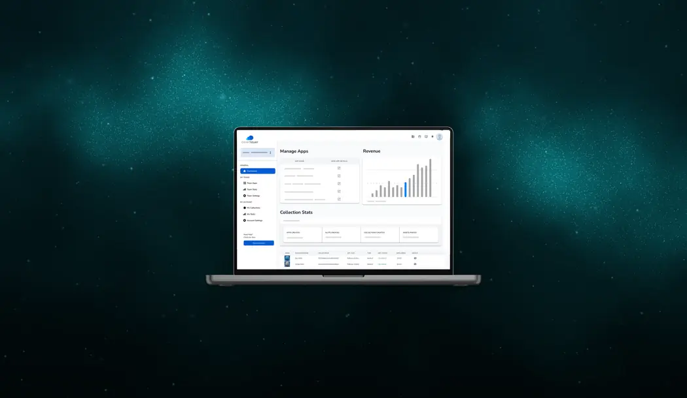
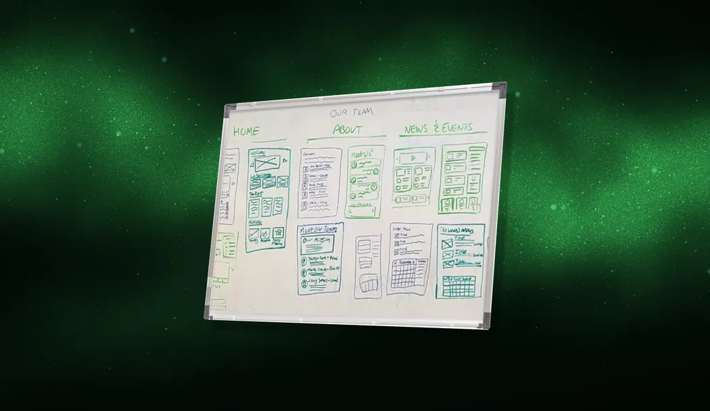
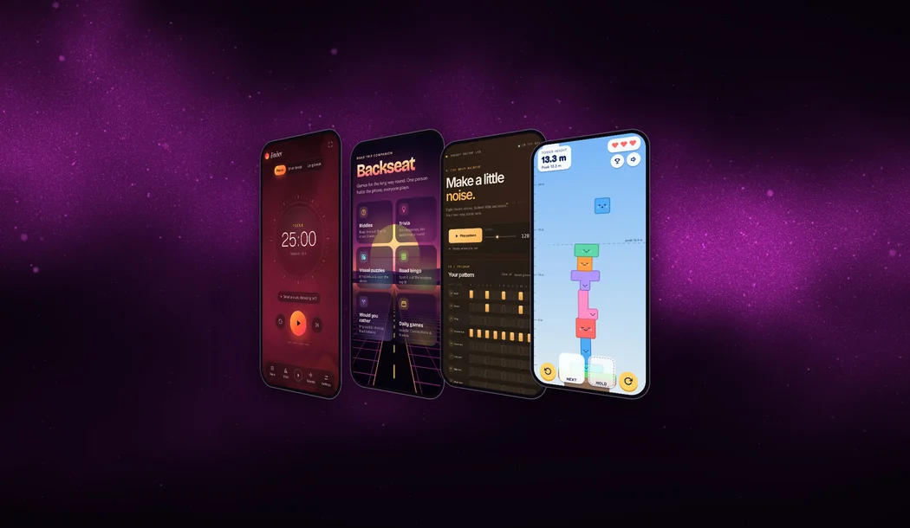

11 words. The first draft had 24.
I’m Dylan, a UX and product designer stripping away the unnecessary.
Founding designer at Asset Layer from 2020 to 2024, freelance since 2019, based in Brooklyn. Open to UX and product design roles.
For four years I was the sole UX designer at Asset Layer. The SaaS, marketplace, and game work brought in $400,000+, an onboarding redesign cut new user churn by 35%, and one design system kept it all consistent across platforms.
Before that I tested the IRS fraud detection system at IBM, which taught me to go looking for what breaks. I’ve run more than 30 user testing sessions since, in house and freelance.
I also build. The four projects further down were designed in Figma, coded with Claude, and are live for you to try.
Selected work
4 projects-

Asset Layer Creator Hub
One hub where game developers and outside creators submit, review and ship community content. The number of apps on the platform grew 10x in the weeks after launch.
-
Asset Layer landing page
A two week redesign for a page that was losing new visitors. Less copy, more picture, and more people signing up on their first visit.
-

IMF intranet under constraints
SharePoint 2010, Arial only, eight business days and no access to the people who would use it. We found room for research anyway.
-

Side projects, built with AI
A focus timer, a road trip game, a drum machine and a stacking game. I designed each in Figma and built it with Claude, and all four are live.
Who I’ve worked with
- Asset Layer Lead UX designer, 2020 to 2024. Acquired by Buzzmint in 2024.
- IBM Consultant on the IRS fraud detection system, 2018 to 2020.
- International Monetary Fund Freelance. Intranet redesign and a review of the 2019 annual report.
- Freelance clients Finance, tech and healthcare, since 2019.

Hi, I’m Dylan.
I’ve spent 8+ years around software: first testing it, then designing it. I like the stage of a project where the feature list is long, the time is short, and somebody has to decide what a first time user actually needs to see.
Away from work I like cats and dogs, being outside, and making music. I will talk about synthesizers for as long as you let me. I taught myself guitar (poorly) and piano (also poorly).